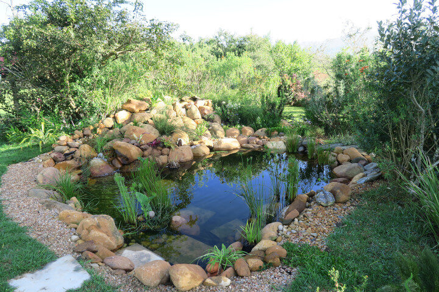
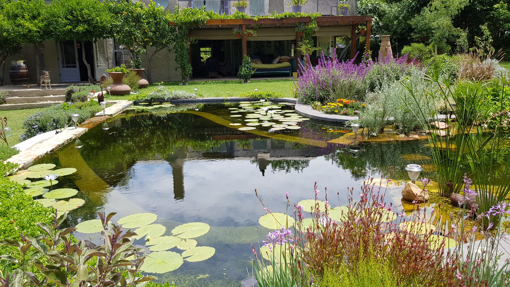
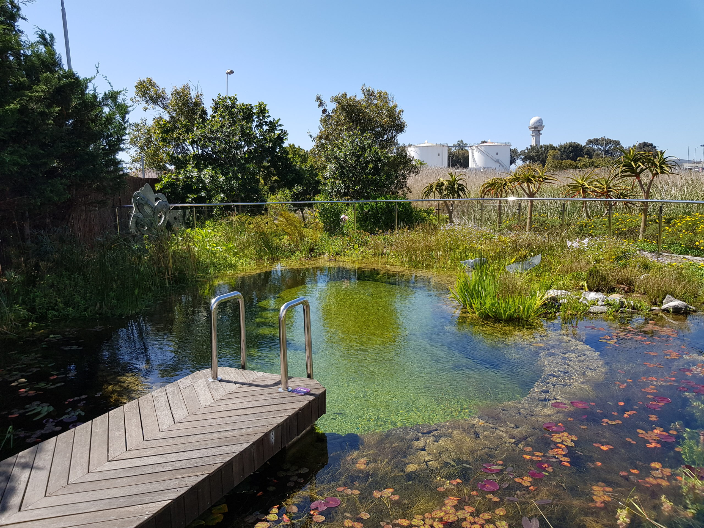

No chemicals, just water that works the way water should — clean, alive, and keeping itself that way entirely on its own.
A planted regeneration zone does the filtering work — aquatic plants, beneficial micro-organisms, and biology you'd find in any healthy waterway. The difference from a conventional pool is that you're not fighting the water; you're letting it find its own equilibrium. On the Garden Route, that makes sense. The fynbos ecology, the local rainfall, the indigenous flora — everything here wants to be part of a living system. An EcoPool works with that, not against it.
Every pool we build is designed for its specific site — the slope, the soil, the aspect, what's already growing there. We don't copy-paste designs. Whether you're in Knysna, Plettenberg Bay, George, or the valleys in between, the pool starts with your land.



No chlorine burn, no red eyes, no chemical residue on your skin. Just water that's genuinely soft to swim in.
No chlorine, no algaecides, no hidden costs of chemical management. Biology does the work instead.
Dragonflies, kingfishers, tree frogs — within a season, the pool becomes an actual habitat. That's not a side effect, it's part of the design.
A well-designed EcoPool costs less to run than a conventional pool — lower electricity, no chemicals, longer lifespan.
We build EcoPools in partnership with EcoPools Africa — the only internationally certified natural pool technology provider in Sub-Saharan Africa, with over 30 years of water engineering behind them. That certification matters. It's the difference between a pool that looks like a natural pool and one that's actually engineered to function as one, decade after decade.
Six Kingdoms brings the site knowledge: the Garden Route fynbos, the local aquatic species, how the Western Cape seasons behave, and how to design a pool in Knysna versus Plettenberg Bay versus George. Put that together and you get something that doesn't just work — it belongs.
Natural pools are a meaningful investment — Garden Route installations typically start from R200,000 for a modest build, rising depending on size, complexity, and site conditions. We're happy to discuss budget early so there are no surprises.
Some pools we've built across the Garden Route.
Sine wasn't sure her back yard could take a pool at all. It could. Small, well-planted, and by summer the dragonflies had moved in.
See all projects →A chlorine pool in Plettenberg Bay that was sitting there costing money. We converted it to an EcoPool — less maintenance, no chemicals, and life moved in fast.
Enquire about a conversion →Built into a Knysna fynbos slope from scratch — rainwater fed, planted with indigenous aquatics, and swimming well since the first season.
Enquire about a new build →"We had no idea a swimming pool could feel this alive. Six Kingdoms transformed what we imagined as just a pool into something the whole family — and apparently the local frogs — can't get enough of."
Tell us where you are and what you're working with. We'll get back to you within a working day.